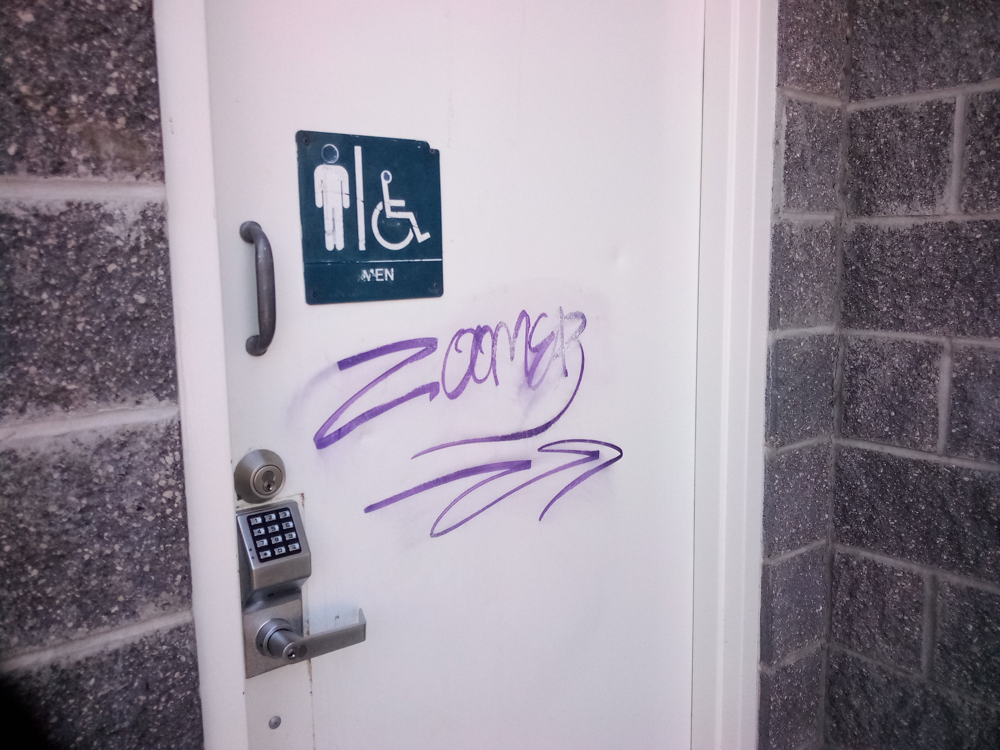
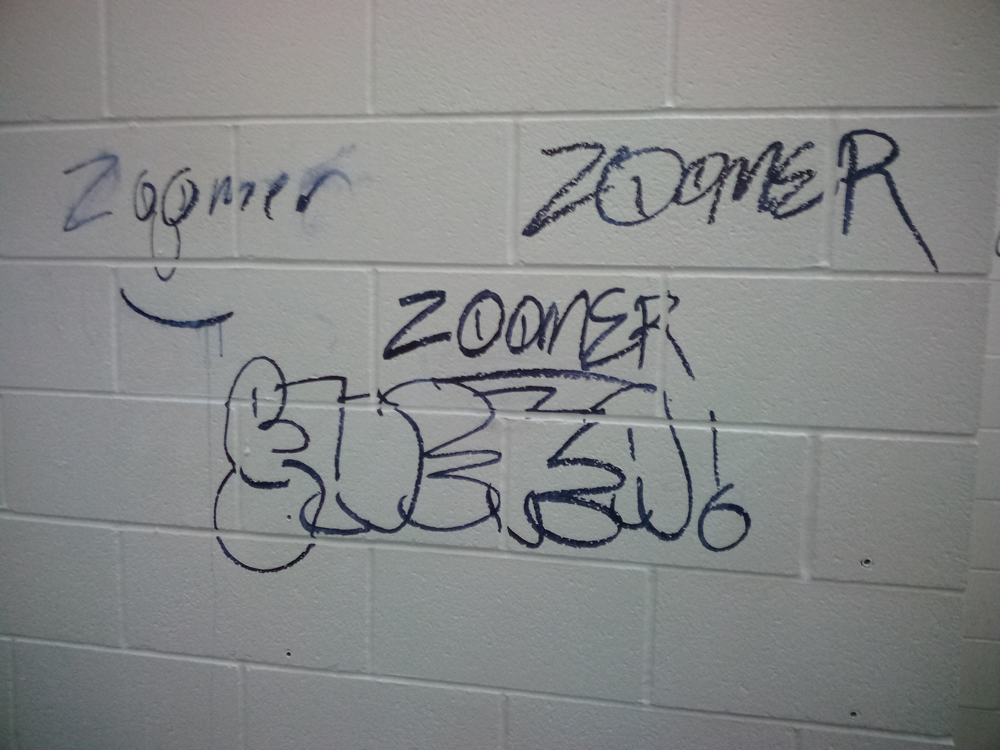

Who:Male Graffiti tagger
What:Probobly a highschooler, street art style tags
How: utilizes chisil-tipped markers, and spray paint on rarer occations
Zoomer started his spree in early july 2023, when he initially tagged allaround ft nugent park with a marker and in the boys bathroom. he is not promonent in the woods of ft nugent as are some other artists, and his work has not been seen outside of the ft nugent area. He probobly lives near by, hence that he would only leave with markers and not acctual spray cans. Around July 22, 2023 the bathrooms were cleaned up and someware around there Zoomer tagged them again, with a lot more shock. the room was filled with tags and from a brief visual leads me to suspect that he came there with a friend or two.

